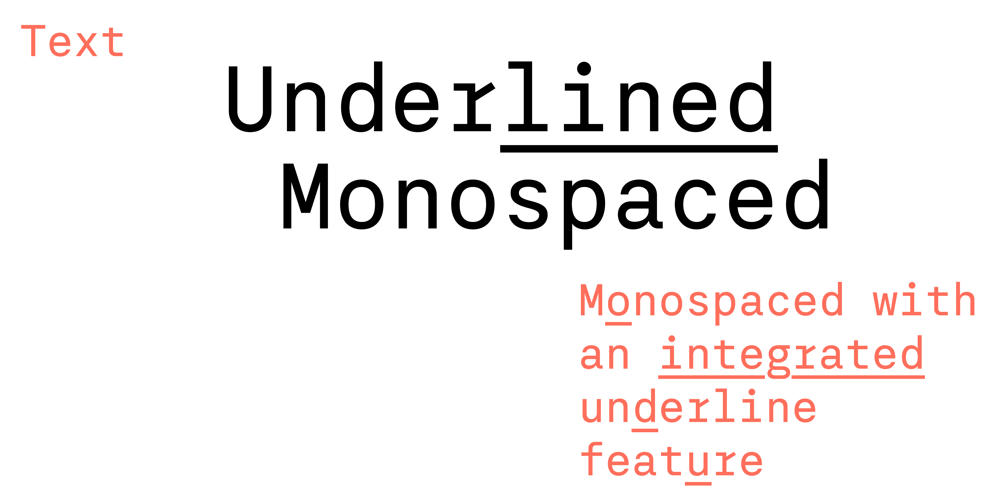

Text was part of my diploma at HBKsaar in 2019. It’s a monospaced with an accompaniying version with an underline.
I later added two stylistic sets adding glyphs with different widths.

Wide letters like m and w are 1.5 the average width for the duospaced font and the quattrospaced font gets the wide letters and additionally narrow letters like i and l are 0.5 of the average width.
This gives the text a bit more of a proportional feeling while still having a very strict width scheme for its letterforms.